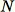
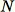
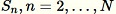
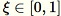
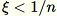
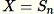
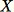
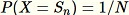
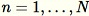
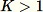

How RCF Works
Amazon SageMaker Random Cut Forest (RCF) is an unsupervised algorithm for detecting anomalous data points within a dataset. These are observations which diverge from otherwise well-structured or patterned data. Anomalies can manifest as unexpected spikes in time series data, breaks in periodicity, or unclassifiable data points. They are easy to describe in that, when viewed in a plot, they are often easily distinguishable from the "regular" data. Including these anomalies in a dataset can drastically increase the complexity of a machine learning task since the "regular" data can often be described with a simple model.
The main idea behind the RCF algorithm is to create a forest of trees where each tree is obtained using a partition of a sample of the training data. For example, a random sample of the input data is first determined. The random sample is then partitioned according to the number of trees in the forest. Each tree is given such a partition and organizes that subset of points into a k-d tree. The anomaly score assigned to a data point by the tree is defined as the expected change in complexity of the tree as a result adding that point to the tree; which, in approximation, is inversely proportional to the resulting depth of the point in the tree. The random cut forest assigns an anomaly score by computing the average score from each constituent tree and scaling the result with respect to the sample size. The RCF algorithm is based on the one described in reference [1].
Sample Data Randomly
The first step in the RCF algorithm is to obtain a random sample of the training
data. In particular, suppose we want a sample of size
 from

total data points. If the training data is small enough, the
entire dataset can be used, and we could randomly draw
elements from this set. However, frequently the training data
is too large to fit all at once, and this approach isn't feasible. Instead, we use a
technique called reservoir sampling.
from

total data points. If the training data is small enough, the
entire dataset can be used, and we could randomly draw
elements from this set. However, frequently the training data
is too large to fit all at once, and this approach isn't feasible. Instead, we use a
technique called reservoir sampling.
Reservoir
sampling
Algorithm: Reservoir Sampling
-
Input: dataset or data stream
-
Initialize the random sample

-
For each observed sample  :
-
Pick a uniform random number 
-
If 
-
Set 
-
-
-
Return 
This algorithm selects a random sample such that  for all  . When  the algorithm is more complicated. Additionally, a distinction must be made between random sampling that is with and without replacement. RCF performs an augmented reservoir sampling without replacement on the training data based on the algorithms described in [2].
Train a RCF Model and Produce Inferences
The next step in RCF is to construct a random cut forest using the random sample of data. First, the sample is partitioned into a number of equal-sized partitions equal to the number of trees in the forest. Then, each partition is sent to an individual tree. The tree recursively organizes its partition into a binary tree by partitioning the data domain into bounding boxes.
This procedure is best illustrated with an example. Suppose a tree is given the following two-dimensional dataset. The corresponding tree is initialized to the root node:
A two-dimensional dataset where the majority of data lies in a cluster (blue) except for one anomalous data point (orange). The tree is initialized with a root node.
The RCF algorithm organizes these data in a tree by first computing a bounding box of the data, selecting a random dimension (giving more weight to dimensions with higher "variance"), and then randomly determining the position of a hyperplane "cut" through that dimension. The two resulting subspaces define their own sub tree. In this example, the cut happens to separate a lone point from the remainder of the sample. The first level of the resulting binary tree consists of two nodes, one which will consist of the subtree of points to the left of the initial cut and the other representing the single point on the right.
A random cut partitioning the two-dimensional dataset. An anomalous data point is more likely to lie isolated in a bounding box at a smaller tree depth than other points.
Bounding boxes are then computed for the left and right halves of the data and the process is repeated until every leaf of the tree represents a single data point from the sample. Note that if the lone point is sufficiently far away then it is more likely that a random cut would result in point isolation. This observation provides the intuition that tree depth is, loosely speaking, inversely proportional to the anomaly score.
When performing inference using a trained RCF model the final anomaly score is reported as the average across scores reported by each tree. Note that it is often the case that the new data point does not already reside in the tree. To determine the score associated with the new point the data point is inserted into the given tree and the tree is efficiently (and temporarily) reassembled in a manner equivalent to the training process described above. That is, the resulting tree is as if the input data point were a member of the sample used to construct the tree in the first place. The reported score is inversely proportional to the depth of the input point within the tree.
Choose Hyperparameters
The primary hyperparameters used to tune the RCF model are num_trees
and num_samples_per_tree. Increasing num_trees has the
effect of reducing the noise observed in anomaly scores since the final score is the
average of the scores reported by each tree. While the optimal value is
application-dependent we recommend using 100 trees to begin with as a balance
between score noise and model complexity. Note that inference time is proportional
to the number of trees. Although training time is also affected it is dominated by
the reservoir sampling algorithm describe above.
The parameter num_samples_per_tree is related to the expected density
of anomalies in the dataset. In particular, num_samples_per_tree should
be chosen such that 1/num_samples_per_tree approximates the ratio of
anomalous data to normal data. For example, if 256 samples are used in each tree
then we expect our data to contain anomalies 1/256 or approximately 0.4% of the
time. Again, an optimal value for this hyperparameter is dependent on the
application.
References
-
Sudipto Guha, Nina Mishra, Gourav Roy, and Okke Schrijvers. "Robust random cut forest based anomaly detection on streams." In International Conference on Machine Learning, pp. 2712-2721. 2016.
-
Byung-Hoon Park, George Ostrouchov, Nagiza F. Samatova, and Al Geist. "Reservoir-based random sampling with replacement from data stream." In Proceedings of the 2004 SIAM International Conference on Data Mining, pp. 492-496. Society for Industrial and Applied Mathematics, 2004.